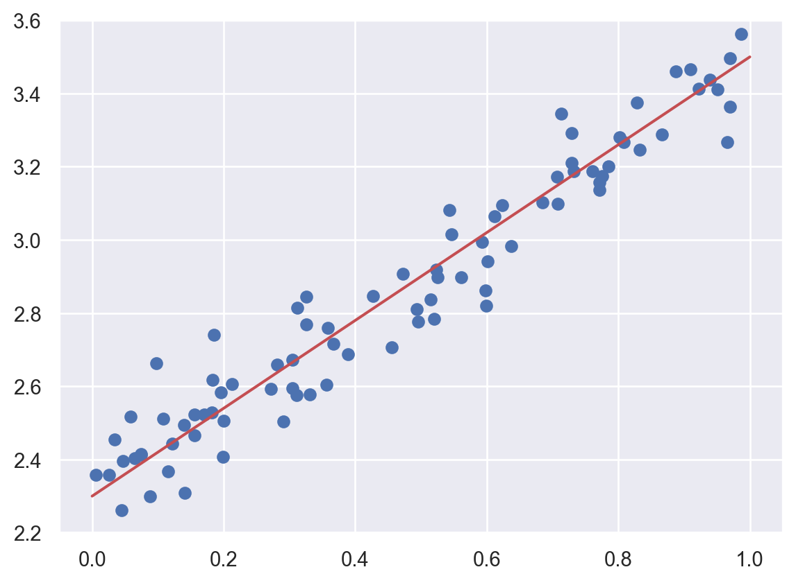

6 Logistic regression
Logistic regression is very similar to linear regression, but applied to classification problems. In this chpater our idea is to treat it as the simplest example of a neural network instead of using other methods. The code we developped in the last chapter will be used extensively.
6.1 Basic idea
Assume that we have a binary classfification problem with \(N\) features. Our model starts from the logit instead of the label \(y\) itself.
\[ logit(y)=\theta_0+\sum_{j=1}^N\theta_jx_j. \]
The logit function is used to describe the logorithm of the binary odds. The odd ratio is the ratio between the probability of success and the probability of failure. Assume the probability of success is \(p\). Then
\[ oddratio(p)=\frac{p}{1-p},\quad logit(p)=z = \log\qty(\frac{p}{1-p}). \] We could solve the logit function, and get its inverse: the function is the Sigmoid function. Once we have the logit value, we could use it to get the probability. \[ p=\sigma(z)=\frac{1}{1+\mathrm{e}^{-z}}. \]
Therefore the model for Logistic regression is as follows:
\[ p=\sigma(L(x))=\sigma\left(\theta_0+\sum_{j=1}^n\theta_jx_j\right)=\sigma\left(\Theta \hat{x}^T\right). \]
6.1.1 Sigmoid function
The Sigmoid function is defined as follows:
\[ \sigma(z)=\frac{1}{1+\mathrm{e}^{-z}}. \] The graph of the function is shown below.
The main properties of \(\sigma\) are listed below as a Lemma.
Lemma 6.1 The Sigmoid function \(\sigma(z)\) satisfies the following properties.
- \(\sigma(z)\rightarrow \infty\) when \(z\mapsto \infty\).
- \(\sigma(z)\rightarrow -\infty\) when \(z\mapsto -\infty\).
- \(\sigma(0)=0.5\).
- \(\sigma(z)\) is always increasing.
- \(\sigma'(z)=\sigma(z)(1-\sigma(z))\).
Solution. We will only look at the last one.
\[ \begin{split} \sigma'(z)&=-\frac{(1+\mathrm e^{-z})'}{(1+\mathrm e^{-z})^2}=\frac{\mathrm e^{-z}}{(1+\mathrm e^{-z})^2}=\frac{1}{1+\mathrm e^{-z}}\frac{\mathrm e^{-z}}{1+\mathrm e^{-z}}\\ &=\sigma(z)\left(\frac{1+\mathrm e^{-z}}{1+\mathrm e^{-z}}-\frac{1}{1+\mathrm e^{-z}}\right)=\sigma(z)(1-\sigma(z)). \end{split} \]
6.1.2 Gradient descent
We would like to use Gradient descent to sovle Logistic regression problems. For binary classification problem, the cost function is defined to be
\[ J(\Theta)=-\frac1m\sum_{i=1}^m\left[y^{(i)}\log(p^{(i)})+(1-y^{(i)})\log(1-p^{(i)})\right]. \] Here \(m\) is the number of data points, \(y^{(i)}\) is the labelled result (which is either \(0\) or \(1\)), \(p^{(i)}\) is the predicted value (which is between \(0\) and \(1\)).
Note
The algorithm gets its name since we are using the gradient to find a direction to lower our height.
6.1.3 The Formulas
Theorem 6.1 The gradient of \(J\) is computed by
\[ \nabla J =\frac1m(\textbf{p}-\textbf{y})^T\hat{\textbf{X}}. \tag{6.1}\]
Click for details.
Proof. The formula is an application of the chain rule for the multivariable functions.
\[ \begin{split} \dfrac{\partial p}{\partial \theta_k}&=\dfrac{\partial}{\partial \theta_k}\sigma\left(\theta_0+\sum_{j=1}^n\theta_jx_j\right)=\dfrac{\partial}{\partial \theta_k}\sigma(L(\Theta))\\ &=\sigma(L)(1-\sigma(L))\dfrac{\partial}{\partial \theta_k}\left(\theta_0+\sum_{j=1}^n\theta_jx_j\right)\\ &=\begin{cases} p(1-p)&\text{ if }k=0,\\ p(1-p)x_k&\text{ otherwise}. \end{cases} \end{split} \] Then
\[ \nabla p = \left(\frac{\partial p}{\partial\theta_0},\ldots,\frac{\partial p}{\partial\theta_n}\right) = p(1-p)\hat{x}. \]
Then
\[ \nabla \log(p) = \frac{\nabla p}p =\frac{p(1-p)\hat{x}}{p}=(1-p)\hat{x}. \]
\[ \nabla \log(1-p) = \frac{-\nabla p}{1-p} =-\frac{p(1-p)\hat{x}}{1-p}=-p\hat{x}. \]
Then
\[ \begin{split} \nabla J& = -\frac1m\sum_{i=1}^m\left[y^{(i)}\nabla \log(p^{(i)})+(1-y^{(i)})\nabla \log(1-p^{(i)})\right]\\ &=-\frac1m\sum_{i=1}^m\left[y^{(i)}(1-p^{(i)})\hat{x}^{(i)}+(1-y^{(i)})(-p^{(i)}\hat{x}^{(i)})\right]\\ &=-\frac1m\sum_{i=1}^m\left[(y^{(i)}-p^{(i)})\hat{x}^{(i)}\right]. \end{split} \]
We write \(\hat{x}^{(i)}\) as row vectors, and stack all these row vectors vertically. What we get is a matrix \(\hat{\textbf X}\) of the size \(m\times (1+n)\). We stack all \(y^{(i)}\) (resp. \(p^{(i)}\)) vectically to get the \(m\)-dim column vector \(\textbf y\) (resp. \(\textbf p\)).
Using this notation, the previous formula becomes
\[ \nabla J =\frac1m(\textbf{p}-\textbf{y})^T\hat{\textbf{X}}. \]
After the gradient can be computed, we can start to use the gradient descent method. Note that, although \(\Theta\) are not explicitly presented in the formula of \(\nabla J\), this is used to modify \(\Theta\):
\[ \Theta_{s+1} = \Theta_s - \alpha\nabla J. \]
Note
If you directly use library, like sklearn or PyTorch, they will handle the concrete computation of these gradients.
6.2 Regularization
6.2.1 Three types of errors
Every estimator has its advantages and drawbacks. Its generalization error can be decomposed in terms of bias, variance and noise. The bias of an estimator is its average error for different training sets. The variance of an estimator indicates how sensitive it is to varying training sets. Noise is a property of the data.
6.2.2 Underfit vs Overfit
When fit a model to data, it is highly possible that the model is underfit or overfit.
Roughly speaking, underfit means the model is not sufficient to fit the training samples, and overfit means that the models learns too many noise from the data. In many cases, high bias is related to underfit, and high variance is related to overfit.
The following example is from the sklearn guide. Although it is a polynomial regression example, it grasps the key idea of underfit and overfit.

6.2.3 Learning curves (accuracy vs training size)
A learning curve shows the validation and training score of an estimator for varying a key hyperparameter. In most cases the key hyperparameter is the training size or the number of epochs. It is a tool to find out how much we benefit from altering the hyperparameter by training more data or training for more epochs, and whether the estimator suffers more from a variance error or a bias error.
sklearn provides sklearn.model_selection.learning_curve() to generate the values that are required to plot such a learning curve. However this function is just related to the sample size. If we would like to talk about epochs, we need other packages.
Let us first look at the learning curve about sample size. The official document page is here. The function takes input estimator, dataset X, y, and an arry-like argument train_sizes. The dataset (X, y) will be split into pieces using the cross-validation technique. The number of pieces is set by the argument cv. The default value is cv=5. For details about cross-validation please see Section 2.2.6.
Then the model is trained over a random sample of the training set, and evaluate the score over the test set. The size of the sample of the training set is set by the argument train_sizes. This argument is array-like. Therefore the process will be repeated several times, and we can see the impact of increasing the training size.
The output contains three pieces. The first is train_sizes_abs which is the number of elements in each training set. This output is mainly for reference. The difference between the output and the input train_sizes is that the input can be float which represents the percentagy. The output is always the exact number of elements.
The second output is train_scores and the third is test_scores, both of which are the scores we get from the training and testing process. Note that both are 2D numpy arrays, of the size (number of different sizes, cv). Each row is a 1D numpy array representing the cross-validation scores, which is corresponding to a train size. If we want the mean as the cross-validation score, we could use train_scores.mean(axis=1).
After understanding the input and output, we could plot the learning curve. We still use the horse colic as the example. The details about the dataset can be found here.
import pandas as pd
import numpy as np
url = 'http://archive.ics.uci.edu/ml/machine-learning-databases/horse-colic/horse-colic.data'
df = pd.read_csv(url, delim_whitespace=True, header=None)
df = df.replace("?", np.NaN)
df.fillna(0, inplace=True)
df.drop(columns=[2, 24, 25, 26, 27], inplace=True)
df[23].replace({1: 1, 2: 0}, inplace=True)
X = df.iloc[:, :-1].to_numpy().astype(float)
y = df[23].to_numpy().astype(int)
from sklearn.model_selection import train_test_split
X_train, X_test, y_train, y_test = train_test_split(X, y, test_size=0.15, random_state=42)C:\Users\Xinli\AppData\Local\Temp\ipykernel_65712\73942173.py:5: FutureWarning: The 'delim_whitespace' keyword in pd.read_csv is deprecated and will be removed in a future version. Use ``sep='\s+'`` instead
df = pd.read_csv(url, delim_whitespace=True, header=None)
C:\Users\Xinli\AppData\Local\Temp\ipykernel_65712\73942173.py:10: FutureWarning: A value is trying to be set on a copy of a DataFrame or Series through chained assignment using an inplace method.
The behavior will change in pandas 3.0. This inplace method will never work because the intermediate object on which we are setting values always behaves as a copy.
For example, when doing 'df[col].method(value, inplace=True)', try using 'df.method({col: value}, inplace=True)' or df[col] = df[col].method(value) instead, to perform the operation inplace on the original object.
df[23].replace({1: 1, 2: 0}, inplace=True)We use the model LogisticRegression. The following code plot the learning curve for this model.
from sklearn.linear_model import LogisticRegression
from sklearn.preprocessing import MinMaxScaler
from sklearn.pipeline import Pipeline
clf = LogisticRegression(max_iter=1000)
steps = [('scalar', MinMaxScaler()),
('log', clf)]
pipe = Pipeline(steps=steps)
from sklearn.model_selection import learning_curve
import numpy as np
train_sizes, train_scores, test_scores = learning_curve(pipe, X_train, y_train,
train_sizes=np.linspace(0.1, 1, 20))
import matplotlib.pyplot as plt
plt.plot(train_sizes, train_scores.mean(axis=1), label='train')
plt.plot(train_sizes, test_scores.mean(axis=1), label='test')
plt.legend()
The learning curve is a primary tool for us to study the bias and variance. Usually
- If the two training curve and the testing curve are very close to each other, this means that the variance is low. Otherwise the variance is high, and this means that the model probabily suffer from overfitting.
- If the absolute training curve score is high, this means that the bias is low. Otherwise the bias is high, and this means that the model probabily suffer from underfitting.
In the above example, although regularization is applied by default, you may still notice some overfitting there.
6.2.4 Regularization
Regularization is a technique to deal with overfitting. Here we only talk about the simplest method: ridge regression, also known as Tikhonov regularizaiton. Because of the formula given below, it is also called \(L_2\) regularization. The idea is to add an additional term \(\dfrac{\alpha}{2m}\sum_{i=1}^m\theta_i^2\) to the original cost function. When training with the new cost function, this additional term will force the parameters in the original term to be as small as possible. After finishing training, the additional term will be dropped, and we use the original cost function for validation and testing. Note that in the additional term \(\theta_0\) is not presented.
The hyperparameter \(\alpha\) is the regularization strength. If \(\alpha=0\), the new cost function becomes the original one; If \(\alpha\) is very large, the additional term dominates, and it will force all parameters to be almost \(0\). In different context, the regularization strength is also given by \(C=\dfrac{1}{2\alpha}\), called inverse of regularization strength.
6.2.4.1 The math of regularization
Theorem 6.2 The gradient of the ridge regression cost function is
\[ \nabla J=\frac1m(\textbf{p}-\textbf{y})^T\hat{\textbf{X}}+\frac{\alpha}{m}\Theta. \]
Note that \(\Theta\) doesn’t contain \(\theta_0\), or you may treat \(\theta_0=0\).
The computation is straightforward.
6.2.4.2 The code
Regularization is directly provided by the logistic regression functions.
- In
LogisticRegression, the regularization is given by the argumentpenaltyandC.penaltyspecifies the regularizaiton method. It isl2by default, which is the method above.Cis the inverse of regularization strength, whose default value is1. - In
SGDClassifier, the regularization is given by the argumentpenaltyandalpha.penaltyis the same as that inLogisticRegression, andalphais the regularization strength, whose default value is0.0001.
Let us see the above example.
clf = LogisticRegression(max_iter=1000, C=0.1)
steps = [('scalar', MinMaxScaler()),
('log', clf)]
pipe = Pipeline(steps=steps)
from sklearn.model_selection import learning_curve
import numpy as np
train_sizes, train_scores, test_scores = learning_curve(pipe, X_train, y_train,
train_sizes=np.linspace(0.1, 1, 20))
import matplotlib.pyplot as plt
plt.plot(train_sizes, train_scores.mean(axis=1), label='train')
plt.plot(train_sizes, test_scores.mean(axis=1), label='test')
plt.legend()
After we reduce C from 1 to 0.1, the regularization strength is increased. Then you may find that the gap between the two curves are reduced. However the overall performace is also reduced, from 85%~90% in C=1 case to around 80% in C=0.1 case. This means that the model doesn’t fit the data well as the previous one. Therefore this is a trade-off: decrease the variance but increase the bias.
6.3 Neural network implement of Logistic regression
In the previous sections, we use gradient descent to run the Logistic regression model. We mentioned some important concepts, like epochs, mini-batch, etc.. We are going to use PyTorch to implement it. We will reuse many codes we wrote in the previous chapter.
6.3.1 A simple example
We
6.3.2 Example
We still use the horse colic dataset as an example. We first prepare the dataset.
import pandas as pd
import numpy as np
from sklearn.model_selection import train_test_split
url = 'http://archive.ics.uci.edu/ml/machine-learning-databases/horse-colic/horse-colic.data'
df = pd.read_csv(url, sep='\\s+', header=None)
df = df.replace("?", np.NaN)
df.fillna(0, inplace=True)
df = df.drop(columns=[2, 24, 25, 26, 27])
df[23] = df[23].replace({1: 1, 2: 0})
X = df.iloc[:, :-1].to_numpy().astype(float)
y = df[23].to_numpy().astype(int)
SEED = 42
X_train, X_test, y_train, y_test = train_test_split(X, y, test_size=0.15, random_state=SEED)We need to perform normalization before throwing the data into the model. Here we use the MinMaxScaler() from sklearn package.
Then we write a Dataset class to build the dataset and create the dataloaders. Since the set is already split, we don’t need to random_split here.
import torch
from torch.utils.data import Dataset, DataLoader
class MyData(Dataset):
def __init__(self, X, y):
self.X = torch.tensor(X, dtype=float)
self.y = torch.tensor(y, dtype=float).reshape(-1, 1)
def __getitem__(self, index):
return (self.X[index], self.y[index])
def __len__(self):
return len(self.y)
train_set = MyData(X_train, y_train)
val_set = MyData(X_test, y_test)
train_loader = DataLoader(train_set, batch_size=32, shuffle=True)
val_loader = DataLoader(val_set, batch_size=32)In the following code, we first set up the original model.
import torch.nn as nn
from torch.nn.modules import Linear
class LoR(nn.Module):
def __init__(self, *args, **kwargs) -> None:
super().__init__(*args, **kwargs)
self.linear = Linear(in_features=22, out_features=1, dtype=float)
self.activation = nn.Sigmoid()
def forward(self, X):
# pred = self.activation(self.linear(X))
pred = self.linear(X)
# return (pred >= 0).float()
return predThen we derive the base ModelTemplate class.
class LoRModel(ModelTemplate):
def __init__(self, model, loss_fn, optimizer):
super().__init__(model, loss_fn, optimizer)
self.stats['acc_train'] = []
self.stats['acc_val'] = []
def compute_acc(self, dataloader):
with torch.no_grad():
acc = []
for X_batch, y_batch in dataloader:
yhat = torch.sigmoid(self.model(X_batch))
y_pred = (yhat>=0.5).to(float)
acc.append((y_pred==y_batch).sum().item())
# print(acc_train)
return np.sum(acc)/len(dataloader.dataset)
def log_update(self, train_time, loss, val_time, val_loss, train_loader, val_loader):
super().log_update(train_time, loss, val_time, val_loss, train_loader, val_loader)
acc_train = self.compute_acc(train_loader)
acc_val = self.compute_acc(val_loader)
self.stats['acc_train'].append(acc_train)
self.stats['acc_val'].append(acc_val)
# p = self.model.state_dict()
# self.stats['acc'].append([p['linear.bias'].item(), p['linear.weight'].item()])
def log_output(self, verbose=0):
s = super().log_output(verbose=0, formatstr=':.6f')
s.append(f'acc_train: {self.stats['acc_train'][-1]:.6f}')
s.append(f'acc_val: {self.stats['acc_val'][-1]:.6f}')
# s.append(f'p: [{self.stats['p'][-1][0]:.6f}, {self.stats['p'][-1][1]:.6f}]')
if verbose == 1:
print(' '.join(s))
return sfrom torch.optim import SGD
from torch.nn import BCEWithLogitsLoss, BCELoss
original_model = LoR()
model = LoRModel(model=original_model, loss_fn=BCEWithLogitsLoss(),
optimizer=SGD(original_model.parameters(), lr = 0.1))
model.train(train_loader, val_loader, epoch_num=100, verbose=1)epoch 1 train_time: 0.009149 loss: 0.674627 val_time: 0.001110 val_loss: 0.619009 acc_train: 0.627451 acc_val: 0.688889
epoch 2 train_time: 0.004470 loss: 0.647466 val_time: 0.001009 val_loss: 0.606279 acc_train: 0.627451 acc_val: 0.688889
epoch 3 train_time: 0.004992 loss: 0.631382 val_time: 0.001513 val_loss: 0.587835 acc_train: 0.627451 acc_val: 0.688889
epoch 4 train_time: 0.004513 loss: 0.619163 val_time: 0.000999 val_loss: 0.579341 acc_train: 0.631373 acc_val: 0.688889
epoch 5 train_time: 0.005146 loss: 0.609541 val_time: 0.000000 val_loss: 0.570777 acc_train: 0.631373 acc_val: 0.711111
epoch 6 train_time: 0.005018 loss: 0.600289 val_time: 0.000999 val_loss: 0.564059 acc_train: 0.639216 acc_val: 0.711111
epoch 7 train_time: 0.005141 loss: 0.590659 val_time: 0.001001 val_loss: 0.561695 acc_train: 0.654902 acc_val: 0.688889
epoch 8 train_time: 0.006529 loss: 0.581817 val_time: 0.001006 val_loss: 0.556573 acc_train: 0.658824 acc_val: 0.666667
epoch 9 train_time: 0.006056 loss: 0.575897 val_time: 0.001006 val_loss: 0.555410 acc_train: 0.701961 acc_val: 0.711111
epoch 10 train_time: 0.004529 loss: 0.568207 val_time: 0.001007 val_loss: 0.549390 acc_train: 0.709804 acc_val: 0.711111
epoch 11 train_time: 0.006530 loss: 0.561794 val_time: 0.000997 val_loss: 0.543227 acc_train: 0.717647 acc_val: 0.711111
epoch 12 train_time: 0.006521 loss: 0.556270 val_time: 0.001000 val_loss: 0.538794 acc_train: 0.729412 acc_val: 0.711111
epoch 13 train_time: 0.006516 loss: 0.551529 val_time: 0.001503 val_loss: 0.538478 acc_train: 0.745098 acc_val: 0.711111
epoch 14 train_time: 0.006579 loss: 0.546595 val_time: 0.001001 val_loss: 0.537497 acc_train: 0.749020 acc_val: 0.733333
epoch 15 train_time: 0.006550 loss: 0.543805 val_time: 0.000991 val_loss: 0.533154 acc_train: 0.752941 acc_val: 0.733333
epoch 16 train_time: 0.006036 loss: 0.537000 val_time: 0.000999 val_loss: 0.530011 acc_train: 0.752941 acc_val: 0.733333
epoch 17 train_time: 0.004514 loss: 0.533244 val_time: 0.001003 val_loss: 0.526669 acc_train: 0.760784 acc_val: 0.733333
epoch 18 train_time: 0.005025 loss: 0.529177 val_time: 0.001003 val_loss: 0.525024 acc_train: 0.764706 acc_val: 0.733333
epoch 19 train_time: 0.006732 loss: 0.525873 val_time: 0.001000 val_loss: 0.523801 acc_train: 0.776471 acc_val: 0.733333
epoch 20 train_time: 0.008019 loss: 0.521512 val_time: 0.001125 val_loss: 0.522176 acc_train: 0.780392 acc_val: 0.755556
epoch 21 train_time: 0.006521 loss: 0.518520 val_time: 0.000000 val_loss: 0.519269 acc_train: 0.780392 acc_val: 0.755556
epoch 22 train_time: 0.006311 loss: 0.515101 val_time: 0.001008 val_loss: 0.515778 acc_train: 0.776471 acc_val: 0.733333
epoch 23 train_time: 0.006001 loss: 0.513203 val_time: 0.001000 val_loss: 0.519432 acc_train: 0.784314 acc_val: 0.755556
epoch 24 train_time: 0.005550 loss: 0.509660 val_time: 0.000999 val_loss: 0.515220 acc_train: 0.784314 acc_val: 0.777778
epoch 25 train_time: 0.004506 loss: 0.506943 val_time: 0.001003 val_loss: 0.512260 acc_train: 0.788235 acc_val: 0.777778
epoch 26 train_time: 0.005409 loss: 0.505380 val_time: 0.001000 val_loss: 0.513752 acc_train: 0.780392 acc_val: 0.755556
epoch 27 train_time: 0.007043 loss: 0.501728 val_time: 0.000000 val_loss: 0.513422 acc_train: 0.780392 acc_val: 0.755556
epoch 28 train_time: 0.004558 loss: 0.500234 val_time: 0.000000 val_loss: 0.508129 acc_train: 0.780392 acc_val: 0.755556
epoch 29 train_time: 0.005512 loss: 0.497392 val_time: 0.001000 val_loss: 0.510038 acc_train: 0.784314 acc_val: 0.755556
epoch 30 train_time: 0.004509 loss: 0.495293 val_time: 0.001000 val_loss: 0.506375 acc_train: 0.784314 acc_val: 0.755556
epoch 31 train_time: 0.006531 loss: 0.493891 val_time: 0.001010 val_loss: 0.508324 acc_train: 0.784314 acc_val: 0.755556
epoch 32 train_time: 0.006678 loss: 0.490733 val_time: 0.001011 val_loss: 0.502308 acc_train: 0.784314 acc_val: 0.755556
epoch 33 train_time: 0.006102 loss: 0.489358 val_time: 0.001507 val_loss: 0.504019 acc_train: 0.788235 acc_val: 0.755556
epoch 34 train_time: 0.006013 loss: 0.486646 val_time: 0.001000 val_loss: 0.504261 acc_train: 0.784314 acc_val: 0.755556
epoch 35 train_time: 0.005564 loss: 0.485487 val_time: 0.000976 val_loss: 0.502926 acc_train: 0.784314 acc_val: 0.755556
epoch 36 train_time: 0.005718 loss: 0.483562 val_time: 0.001007 val_loss: 0.504548 acc_train: 0.792157 acc_val: 0.755556
epoch 37 train_time: 0.006582 loss: 0.481137 val_time: 0.001072 val_loss: 0.502033 acc_train: 0.792157 acc_val: 0.755556
epoch 38 train_time: 0.005511 loss: 0.479781 val_time: 0.001003 val_loss: 0.501860 acc_train: 0.796078 acc_val: 0.755556
epoch 39 train_time: 0.006415 loss: 0.478170 val_time: 0.001165 val_loss: 0.500380 acc_train: 0.800000 acc_val: 0.755556
epoch 40 train_time: 0.006022 loss: 0.476871 val_time: 0.001000 val_loss: 0.498162 acc_train: 0.796078 acc_val: 0.755556
epoch 41 train_time: 0.005652 loss: 0.475505 val_time: 0.001009 val_loss: 0.499792 acc_train: 0.796078 acc_val: 0.777778
epoch 42 train_time: 0.006061 loss: 0.473835 val_time: 0.001005 val_loss: 0.498708 acc_train: 0.796078 acc_val: 0.777778
epoch 43 train_time: 0.006543 loss: 0.472051 val_time: 0.001000 val_loss: 0.501097 acc_train: 0.796078 acc_val: 0.777778
epoch 44 train_time: 0.007028 loss: 0.470318 val_time: 0.001007 val_loss: 0.497102 acc_train: 0.800000 acc_val: 0.777778
epoch 45 train_time: 0.007029 loss: 0.468182 val_time: 0.000000 val_loss: 0.494473 acc_train: 0.800000 acc_val: 0.777778
epoch 46 train_time: 0.006011 loss: 0.467393 val_time: 0.001154 val_loss: 0.495783 acc_train: 0.796078 acc_val: 0.777778
epoch 47 train_time: 0.005069 loss: 0.465967 val_time: 0.000514 val_loss: 0.495563 acc_train: 0.796078 acc_val: 0.777778
epoch 48 train_time: 0.006578 loss: 0.465339 val_time: 0.001000 val_loss: 0.495331 acc_train: 0.796078 acc_val: 0.777778
epoch 49 train_time: 0.005827 loss: 0.463593 val_time: 0.001001 val_loss: 0.493717 acc_train: 0.796078 acc_val: 0.777778
epoch 50 train_time: 0.007028 loss: 0.462370 val_time: 0.001006 val_loss: 0.492275 acc_train: 0.800000 acc_val: 0.777778
epoch 51 train_time: 0.007019 loss: 0.461523 val_time: 0.000518 val_loss: 0.493138 acc_train: 0.796078 acc_val: 0.800000
epoch 52 train_time: 0.005528 loss: 0.460417 val_time: 0.001007 val_loss: 0.494454 acc_train: 0.800000 acc_val: 0.777778
epoch 53 train_time: 0.006044 loss: 0.459334 val_time: 0.001998 val_loss: 0.492033 acc_train: 0.796078 acc_val: 0.800000
epoch 54 train_time: 0.005609 loss: 0.457327 val_time: 0.001000 val_loss: 0.487873 acc_train: 0.803922 acc_val: 0.777778
epoch 55 train_time: 0.006538 loss: 0.456415 val_time: 0.001002 val_loss: 0.487303 acc_train: 0.803922 acc_val: 0.777778
epoch 56 train_time: 0.005528 loss: 0.455030 val_time: 0.000999 val_loss: 0.486743 acc_train: 0.803922 acc_val: 0.777778
epoch 57 train_time: 0.004508 loss: 0.454154 val_time: 0.001000 val_loss: 0.487643 acc_train: 0.803922 acc_val: 0.800000
epoch 58 train_time: 0.004515 loss: 0.453704 val_time: 0.000999 val_loss: 0.483372 acc_train: 0.807843 acc_val: 0.777778
epoch 59 train_time: 0.004568 loss: 0.451267 val_time: 0.001021 val_loss: 0.484756 acc_train: 0.807843 acc_val: 0.800000
epoch 60 train_time: 0.006513 loss: 0.451604 val_time: 0.000000 val_loss: 0.486329 acc_train: 0.803922 acc_val: 0.777778
epoch 61 train_time: 0.005353 loss: 0.449811 val_time: 0.001000 val_loss: 0.484585 acc_train: 0.803922 acc_val: 0.777778
epoch 62 train_time: 0.005524 loss: 0.449721 val_time: 0.000998 val_loss: 0.482820 acc_train: 0.807843 acc_val: 0.800000
epoch 63 train_time: 0.005516 loss: 0.447913 val_time: 0.001507 val_loss: 0.482491 acc_train: 0.803922 acc_val: 0.777778
epoch 64 train_time: 0.007041 loss: 0.448823 val_time: 0.001000 val_loss: 0.482010 acc_train: 0.803922 acc_val: 0.777778
epoch 65 train_time: 0.005012 loss: 0.446369 val_time: 0.001503 val_loss: 0.483129 acc_train: 0.800000 acc_val: 0.755556
epoch 66 train_time: 0.006522 loss: 0.445447 val_time: 0.002009 val_loss: 0.480999 acc_train: 0.800000 acc_val: 0.777778
epoch 67 train_time: 0.005015 loss: 0.445404 val_time: 0.001000 val_loss: 0.486650 acc_train: 0.796078 acc_val: 0.777778
epoch 68 train_time: 0.005522 loss: 0.444460 val_time: 0.001000 val_loss: 0.487049 acc_train: 0.796078 acc_val: 0.777778
epoch 69 train_time: 0.006112 loss: 0.442527 val_time: 0.001505 val_loss: 0.482234 acc_train: 0.800000 acc_val: 0.777778
epoch 70 train_time: 0.006519 loss: 0.442984 val_time: 0.001000 val_loss: 0.482030 acc_train: 0.800000 acc_val: 0.777778
epoch 71 train_time: 0.004506 loss: 0.440611 val_time: 0.001512 val_loss: 0.480820 acc_train: 0.803922 acc_val: 0.777778
epoch 72 train_time: 0.006124 loss: 0.440156 val_time: 0.000894 val_loss: 0.480842 acc_train: 0.800000 acc_val: 0.777778
epoch 73 train_time: 0.005010 loss: 0.438593 val_time: 0.001000 val_loss: 0.479417 acc_train: 0.803922 acc_val: 0.777778
epoch 74 train_time: 0.006529 loss: 0.438962 val_time: 0.001007 val_loss: 0.479688 acc_train: 0.803922 acc_val: 0.777778
epoch 75 train_time: 0.006538 loss: 0.437273 val_time: 0.000999 val_loss: 0.480948 acc_train: 0.800000 acc_val: 0.777778
epoch 76 train_time: 0.008034 loss: 0.436836 val_time: 0.000504 val_loss: 0.478903 acc_train: 0.803922 acc_val: 0.777778
epoch 77 train_time: 0.007015 loss: 0.436190 val_time: 0.000000 val_loss: 0.481736 acc_train: 0.796078 acc_val: 0.777778
epoch 78 train_time: 0.006032 loss: 0.436840 val_time: 0.001045 val_loss: 0.481888 acc_train: 0.796078 acc_val: 0.777778
epoch 79 train_time: 0.005521 loss: 0.433567 val_time: 0.001003 val_loss: 0.478438 acc_train: 0.803922 acc_val: 0.777778
epoch 80 train_time: 0.006090 loss: 0.433801 val_time: 0.001002 val_loss: 0.479732 acc_train: 0.800000 acc_val: 0.777778
epoch 81 train_time: 0.005529 loss: 0.433351 val_time: 0.001000 val_loss: 0.476616 acc_train: 0.800000 acc_val: 0.777778
epoch 82 train_time: 0.006518 loss: 0.432495 val_time: 0.001505 val_loss: 0.475177 acc_train: 0.800000 acc_val: 0.777778
epoch 83 train_time: 0.006561 loss: 0.431201 val_time: 0.001000 val_loss: 0.477437 acc_train: 0.800000 acc_val: 0.777778
epoch 84 train_time: 0.005056 loss: 0.430826 val_time: 0.001011 val_loss: 0.475507 acc_train: 0.800000 acc_val: 0.777778
epoch 85 train_time: 0.005032 loss: 0.431591 val_time: 0.001000 val_loss: 0.477952 acc_train: 0.800000 acc_val: 0.777778
epoch 86 train_time: 0.005018 loss: 0.428879 val_time: 0.001003 val_loss: 0.475768 acc_train: 0.800000 acc_val: 0.777778
epoch 87 train_time: 0.006157 loss: 0.429469 val_time: 0.000864 val_loss: 0.479029 acc_train: 0.796078 acc_val: 0.777778
epoch 88 train_time: 0.006541 loss: 0.427537 val_time: 0.002007 val_loss: 0.475638 acc_train: 0.807843 acc_val: 0.777778
epoch 89 train_time: 0.007041 loss: 0.426961 val_time: 0.001001 val_loss: 0.474318 acc_train: 0.807843 acc_val: 0.777778
epoch 90 train_time: 0.007595 loss: 0.425945 val_time: 0.000936 val_loss: 0.473740 acc_train: 0.807843 acc_val: 0.777778
epoch 91 train_time: 0.007540 loss: 0.426258 val_time: 0.001009 val_loss: 0.474088 acc_train: 0.807843 acc_val: 0.777778
epoch 92 train_time: 0.006417 loss: 0.425213 val_time: 0.001503 val_loss: 0.473682 acc_train: 0.807843 acc_val: 0.777778
epoch 93 train_time: 0.006039 loss: 0.424503 val_time: 0.001009 val_loss: 0.473505 acc_train: 0.807843 acc_val: 0.777778
epoch 94 train_time: 0.004512 loss: 0.425619 val_time: 0.001010 val_loss: 0.473489 acc_train: 0.807843 acc_val: 0.777778
epoch 95 train_time: 0.006037 loss: 0.423174 val_time: 0.001014 val_loss: 0.471925 acc_train: 0.807843 acc_val: 0.777778
epoch 96 train_time: 0.008095 loss: 0.423395 val_time: 0.000000 val_loss: 0.473106 acc_train: 0.803922 acc_val: 0.777778
epoch 97 train_time: 0.004768 loss: 0.422295 val_time: 0.003011 val_loss: 0.470060 acc_train: 0.807843 acc_val: 0.777778
epoch 98 train_time: 0.005531 loss: 0.421285 val_time: 0.001005 val_loss: 0.468067 acc_train: 0.803922 acc_val: 0.777778
epoch 99 train_time: 0.006522 loss: 0.422199 val_time: 0.000999 val_loss: 0.468618 acc_train: 0.807843 acc_val: 0.777778
epoch 100 train_time: 0.007038 loss: 0.420444 val_time: 0.001007 val_loss: 0.467997 acc_train: 0.803922 acc_val: 0.7777786.4 Pytorch crash course
6.4.1 Tensor
This is the basic data structure. It is very similar to numpy.ndarray, but with many more features. There are a few things that we need to mention at the beginning.
- A tensor with only one item is mathematically equal to a number. In Pytorch, you may use
.item()to extract the number from a tensor with only one item.
- It is type sensitive. Pytorch expect you to assign the exact data type to each tensor, and it won’t automatically guess it in most cases. You may specify data type when you create a tensor.
If you want to convert data type, you could use .to().
Tensor data structure has many other features that will be introduced later.
6.4.2 Gradient descent
To implement the gradient descent algorithm for the neural network, there would be a series of computations:
- From the input, feedforward the network to get the output
y_pred. - Based on the real output
y_true, compute the loss functionloss = loss_fn(y_true, y_pred). - Compute the gradient based on the information provided. For this step many data are needed. You may look up the gradient descent formula (backprop).
- Based on the gradient computed in Step 3, weights are updated, according to the optimizer we choose.
In Pytorch, the above steps are implemented as follows.
- You have to define a
modelfunction to indicate how to feedforward the network to get an output. Here for a lot of reasons, the typical way is to define amodelclass, which contains aforwardmethod that can compute the output of the model. Let us consider the following example: the dataset is as follows:
The model is defined as follows.
In this example, we define a 2-input linear regression model. Pytorch doesn’t need the class to work. Actually the minimal working example of the above code is as follows. To put things into a class can make it easier in larger models.
The reason the model can be written in a very simple way is because the information about computing gradients is recorded in the parameter tensors, on the level of tensors, instead of on the level of the model class. Therefore it is important to get access to the parameters of the model.
[Parameter containing:
tensor([[-0.3573, -0.2246]], requires_grad=True),
Parameter containing:
tensor([-0.2558], requires_grad=True)]Note that the parameters we get here is a iterator. So to look at it we need to convert it inot a list. In this example, there are two sets of tensors: the first is the coefficients, and the second is the bias term. This bias term can be turned on/off by setting the argument bias=True or False when using nn.Linear() to create fully connected layers. The default is True.
To evaluate the model, we just directly apply the model to the input tensor.
You may use the coefficients provided above to validate the resutl.
Note that, although we define the .forward() method, we don’t use it explicitly. The reason is that model(x) will not only excute .forward(x) method, but many other operations, like recording many intermediate results that can be used for debugging, visualization and modifying gradients.
- We may define the loss function. We mannually define the MSE loss function.
tensor(34.6054, grad_fn=<MeanBackward0>)- Now we need to do gradient descent. The manual way to
loss.backward(). What it does is to
print(list(model.parameters()))
print(list(model.parameters())[0].grad)
print(list(model.parameters())[1].grad)[Parameter containing:
tensor([[-0.3573, -0.2246]], requires_grad=True), Parameter containing:
tensor([-0.2558], requires_grad=True)]
None
Nonefor i in range(100):
optimizer.zero_grad()
# print(optimizer.param_groups)
y_pred = model(x)
loss = loss_fn(y_pred, y)
# print(optimizer.param_groups)
loss.backward()
optimizer.step()
# print(optimizer.param_groups)
# print(list(model.parameters()))
# print(list(model.parameters())[0].grad)
# print(list(model.parameters())[1].grad)- Update the parameters by
optimor manually done.
6.4.3 Mini-batch
6.4.4 Codes
We will only talk about using packages. sklearn provides two methods to implement the Logistic regression. The API interface is very similar to other models. Later we will use PyTorch and our
Note that Logistic regression is very sensitive to the scale of features. Therefore we need to normalize the features before throwing them into the model.
Let’s still take iris as an example.
The first method is sklearn.linear_model.LogisticRegression.
from sklearn.linear_model import LogisticRegression
from sklearn.pipeline import Pipeline
from sklearn.preprocessing import MinMaxScaler
steps = [('normalize', MinMaxScaler()),
('log', LogisticRegression())]
log_reg = Pipeline(steps=steps)
log_reg.fit(X_train, y_train)
log_reg.score(X_test, y_test)0.9565217391304348Note that this method has an option solver that will set the way to solve the Logistic regression problem, and there is no “stochastic gradient descent” provided. The default solver for this LogsiticRegression is lbfgs which will NOT be discussed in lectures.
The second method is sklearn.linear_model.SGDClassifier.
from sklearn.linear_model import SGDClassifier
from sklearn.pipeline import Pipeline
from sklearn.preprocessing import MinMaxScaler
steps = [('normalize', MinMaxScaler()),
('log', SGDClassifier(loss='log_loss', max_iter=100))]
sgd_clf = Pipeline(steps=steps)
sgd_clf.fit(X_train, y_train)
sgd_clf.score(X_test, y_test)0.9565217391304348This method is the one we discussed in lectures. The log_loss loss function is the binary entropy function we mentioned in lectures. If you change to other loss functions it will become other models.
From the above example, you may notice that SGDClassifier doesn’t perform as well as LogisticRegression. This is due to the algorithm. To make SGDClassifier better you need to tune the hyperparameters, like max_iter, learning_rate/alpha, penalty, etc..
Note
The argument warm_start is used to set whether you want to use your previous model. When set to True, it will reuse the solution of the previous call to fit as initialization, otherwise, just erase the previous solution. The default is False.
Repeatedly calling fit when warm_start is True can result in a different solution than when calling fit a single time because of the way the data is shuffled.
Note
Note that for both methods, regularization (which will be discussed later) is applied by default.
6.4.5 Several important side topics
6.4.5.1 Epochs
We use epoch to describe feeding data into the model. One Epoch is when an entire dataset is passed through the model once. When using gradient descent, we tend to run several epochs. The number of maximal epochs is one important hyperparameter of this model.
The general idea is that more epochs are better for the score of the model, but it will definitely be slower. In addition, sometimes due to many other factors, after a few epochs, the model becomes stall. To train for more epochs cannot improve the model. In this case you have to turn to other methods.
6.4.5.2 Batch Gradient Descent vs SGD vs Minibatch
Recall the Formula Equation 6.1:
\[ \nabla J =\frac1m(\textbf{p}-\textbf{y})^T\hat{\textbf{X}}. \] We could rewrite this formula:
\[ \nabla J =\frac1m(\textbf{p}-\textbf{y})^T\hat{\textbf{X}}=\frac1m\sum_{i=1}^m\left[(p^{(i)}-y^{(i)})\hat{x}^{(i)}\right]. \] This new formula can be understood in the following way: For every data point, we could get one gradient direction. Then \(\nabla J\) is the average of all gradient directions. So this algorithm can be expressed as that compute the gradient for every data points and then take the average, and finally update the parameters once. This algorithm is called batch gradient descent.
Following the idea, there is another way to update the model. For every data point, we could compute one gradient direction, and we could use the gradient direction to update the parameters of the model. This algorithm is called stochastic gradient descent.
Then there is an algrothm living in the middle, called mini-batch gradient descent. In this case, we will group the data set into a collection of subsets of a fiexed number of training examples. Each subset is called a mini-batch, and the fixed number of elements of each mini-batch is called the batch size. Using this method, we will just go through mini-batches one at a time, compute the average of the gradient for these data, and then update the parameters of the model after we finish one mini-batch. Assume that the total number of the dataset is N, the mini-batch size is m. Then there are N/m mini-batches, and during one epoch we will update the model N/m times.
Mini-batch size is one important hyperparameters of this model. Usually the larger the batch size is, the less variance the model has. Then it tends to behave more smoothly, but it will also be slower, and might be stuck to a local minimal. The smaller batch size is more chaotic. It might go faster, but it tends not to converge.
6.5 Exercises and Projects
Exercise 6.1 Please hand write a report about the details of the math formulas for Logistic regression.
Exercise 6.2 CHOOSE ONE: Please use sklearn to apply the LogisticRegression to one of the following datasets. You may either use LogisticRegression or SGDClassifier.
- the
irisdataset. - the dating dataset.
- the
titanicdataset.
Please in addition answer the following questions.
- What is your accuracy score?
- How many epochs do you use?
- Plot the learning curve (accuracy vs training sizes).
Exercise 6.3 CHOOSE ONE: Please use keras to apply the LogisticRegression to one of the following datasets.
- the
irisdataset. - the dating dataset.
- the
titanicdataset.
Please in addition answer the following questions.
- What is your accuracy score?
- How many epochs do you use?
- What is the batch size do you use?
- Plot the learning curve (loss vs epochs, accuracy vs epochs).
- Analyze the bias / variance status.